Character collection
AI Avatars
Characters made of light, texture, and motion.
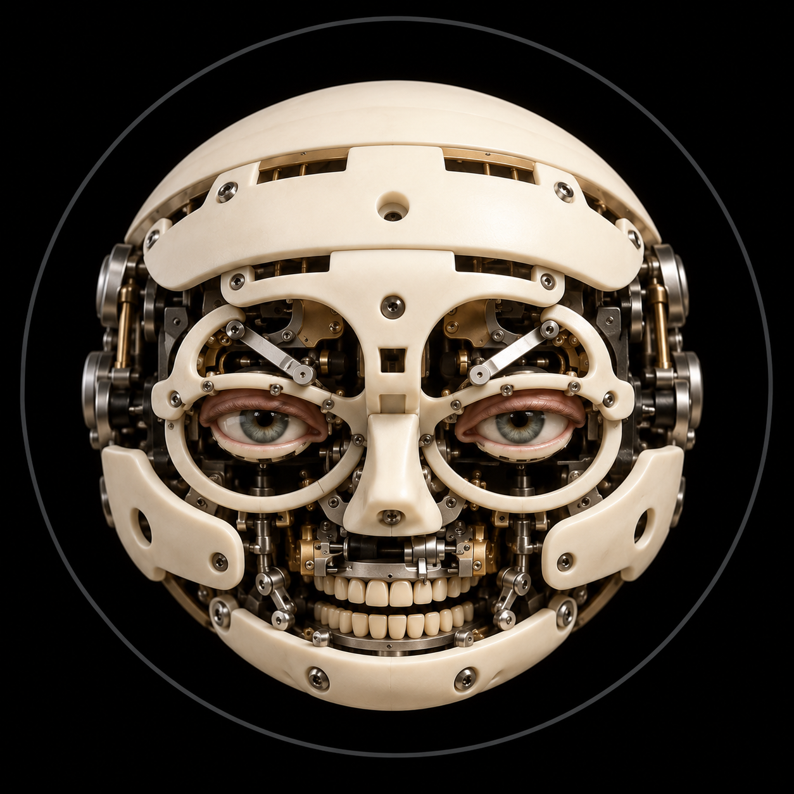
Open SkeletonNine emotional reactions plus idle, thinking, and answering. Play the round mechanical face and download MP4 or GIF clips.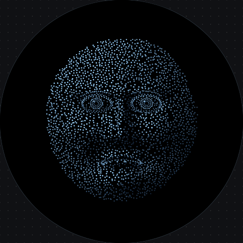
Dot flockA round face made of moving dots, with fuller eyes. Combine 10 emotions, 10 activities, and 6 short reactions.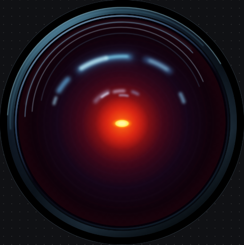
Red eyeA luminous glass eye that responds through its aperture, gaze, and light. Shares the full expression and reaction set.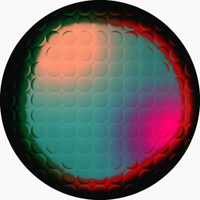
Prismatic lensesTwelve activities, seven expressions, and six palettes inside the original fixed glass-lens grid.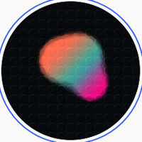
Liquid coreTwelve activities and seven expressions, with six palettes. Compare all ten animated designs together.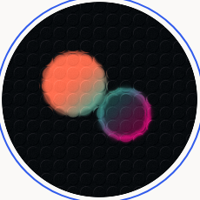
Twin moonsTwelve activities and seven expressions, with six palettes. Compare all ten animated designs together.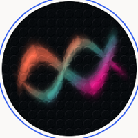
Ribbon knotTwelve activities and seven expressions, with six palettes. Compare all ten animated designs together.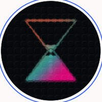
HourglassTwelve activities and seven expressions, with six palettes. Compare all ten animated designs together.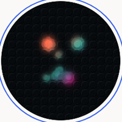
FirefliesTwelve activities and seven expressions, with six palettes. Compare all ten animated designs together.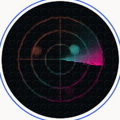
Radar sweepTwelve activities and seven expressions, with six palettes. Compare all ten animated designs together.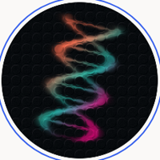
HelixTwelve activities and seven expressions, with six palettes. Compare all ten animated designs together.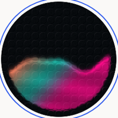
TideTwelve activities and seven expressions, with six palettes. Compare all ten animated designs together.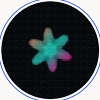
BloomTwelve activities and seven expressions, with six palettes. Compare all ten animated designs together.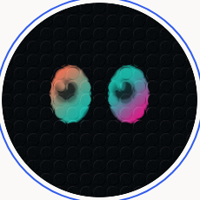
Curious eyesTwelve activities and seven expressions, with six palettes. Compare all ten animated designs together.Interactive visual studies · No account needed